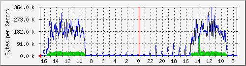

PERISUR-SEMOVI
| System: | MRTG |
| Maintainer: | dangelesc@finanzas.cdmx.gob.mx |
| Description: | Vlan940 Semovi-L2L |
| ifType: | propVirtual (53) |
| ifName: | Vl940 |
| Max Speed: | 125.0 MBytes/s |
| Ip: | 10.1.121.153 (No DNS name) |
Estadísticas actualizadas el Miércoles 16 de Junio de 2021 a las 16:45,
'Core_Perisur.finanzas.df.gob.mx' ha estado funcionando durante 434 days, 21:33:09.
Gráfico diario (5 minutos : Promedio)

|
Máx |
Promedio |
Actual |
| Entrante: |
139.8 kB/s (0.1%) |
10.8 kB/s (0.0%) |
441.0 B/s (0.0%) |
| Saliente: |
360.3 kB/s (0.3%) |
69.7 kB/s (0.1%) |
432.0 B/s (0.0%) |
Gráfico semanal (30 minutos : Promedio)
|
Máx |
Promedio |
Actual |
| Entrante: |
86.0 kB/s (0.1%) |
17.0 kB/s (0.0%) |
1949.0 B/s (0.0%) |
| Saliente: |
237.6 kB/s (0.2%) |
119.1 kB/s (0.1%) |
7961.0 B/s (0.0%) |
Gráfico mensual (2 horas : Promedio)
|
Máx |
Promedio |
Actual |
| Entrante: |
39.9 kB/s (0.0%) |
9713.0 B/s (0.0%) |
27.0 kB/s (0.0%) |
| Saliente: |
235.6 kB/s (0.2%) |
67.1 kB/s (0.1%) |
186.9 kB/s (0.1%) |
Gráfico anual (1 día : Promedio)
|
Máx |
Promedio |
Actual |
| Entrante: |
26.5 kB/s (0.0%) |
5576.0 B/s (0.0%) |
7990.0 B/s (0.0%) |
| Saliente: |
188.2 kB/s (0.2%) |
37.0 kB/s (0.0%) |
48.9 kB/s (0.0%) |
| VERDE ### |
Tráfico entrante en Bytes por segundo |
| AZUL ### |
Saliente:going Traffic in Bytes per Second |